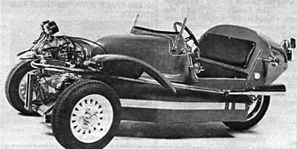

The staff of MOTHER's Experimental Vehicle Newsletter ™ recently received a production model of the Odin Cyclecar for evaluation. And the little three-wheeled car attracted so much attention that we thought some of our regular readers might be interested in learning about this enjoyable yet relatively inexpensive (and fuel-efficient) form of transportation.
As can be seen from the photograph, the Odin is no ordinary automobile. In fact, despite its appearance, it isn't technically an auto at all. Instead, it's a vehicle that's licensed as, and assembled around, a motorcycle ... thus the name "Cyclecar."
Furthermore, even though most people would, if asked, swear that they'd never seen anything like it before, a good many folks seem to find something vaguely familiar about the little three-wheeler. The forward-mounted, air-cooled engine, the swoop fenders, and the torpedo-shaped rear cowling do emulate the charm of some classic old touring cars. And that similarity is due largely to the Odin's being patterned after the 1930-vintage "Beetlebacked" Morgan.
But looks are just part of the fun. Piloting the Cyclecar is definitely a unique driving sensation. The runabout successfully combines the performance and openness of a motorcycle with the handling and familiarity of a small sports car. And even though the version we tested was assembled around a four-cylinder, 350-cc. Honda bike (with a little, high-revving engine not particularly noted for an abundance of power), it still had vigor enough to cruise at 65 MPH, hold its own on the freeway, and negotiate the mountainous roads of the Blue Ridge. (EDITOR'S NOTE: The car in the photo is equipped with a 450-cc. Suzuki powerplant.)
The Cyclecar concept allows its owner to custom-tailor the machine to fit his or her driving habits. By using any one of the virtually hundreds of bikes available between 350 and 600 cc., you can give your three-wheeler about as much power as you want.
The folks at Odin are not trying to market their Cyclecar as a high-mileage vehicle. In fact, they haven't provided any MPG estimates at all ... simply because each machine's mileage rating will vary depending on the engine size used and the owner's driving habits. However, from our testing, it seems that a rule-of-thumb estimate can be made by deducting 10 to 20 percent from the rating of the unaltered bike used as its base. And, in most cases, this will still be far better mileage than could be expected from a conventional automobile.
Since its arrival at our North Carolina office, the Odin "trike" has been extensively used by the staff for daily commuting, without a hitch. Practically everyone who has ridden in the car has been thoroughly impressed with the stability and performance of such an inexpensive mode of transportation. (Oh, by the way, the price of the Cyclecar has got to be one of the lowest on the kit car market. The basic package - which includes everything but the motorcycle parts - starts at just $1,400!) Several versions of the kit are available, with options such as a convertible top and belt drive.
|
 PHOTO: ODIN The Odin Cyclecar performs like a motorcylce and handles like a small sports car. |
|
|